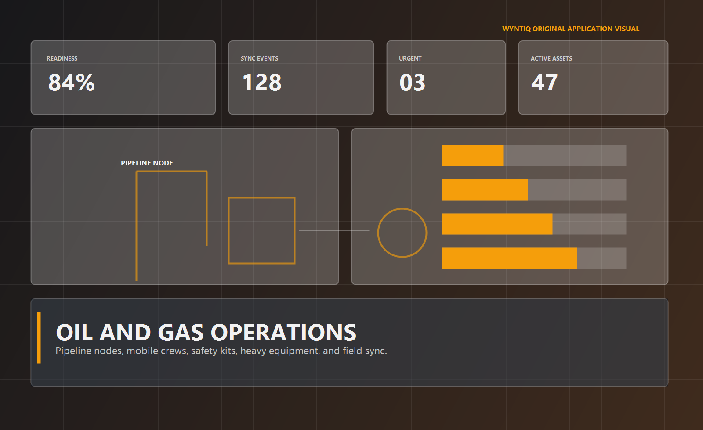

Mesh Diagnostics
Understand the health of field paths and unsynced work.

Remote node queue8 local events
Field route health79%
Last successful hopMobile relay
Fallback pathExport bundle prepared
WYNTIQ helps remote and spread assets track equipment, mobile crew support, safety kits, pipeline-node readiness, and delayed sync across large operational footprints.

The product needs to expose what is at risk before a crew reaches the site, not after delay and rework have already happened.
Track valves, pumps, safety gear, maintenance kits, and priority issues across fixed and spread locations.
Support field teams with a local-first issue trail so requests and completions are not lost in dead zones.
Keep expensive equipment running while preserving visibility on safety-critical consumables and response kits.
Compressor alert, crew dispatch, stock shortfall, and route restoration in a single operational flow.
The layout stays dense and readable without depending on heavy third-party image assets.
When the field link breaks, the job still has to continue. The software should accept that reality.
A public sandbox attracts interest. A guided trial and deployment plan converts qualified buyers.